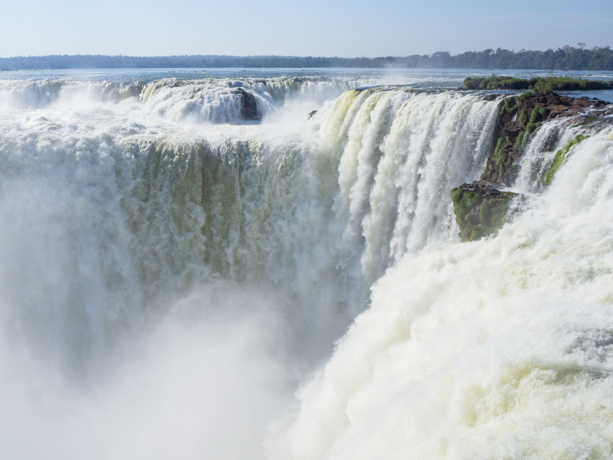
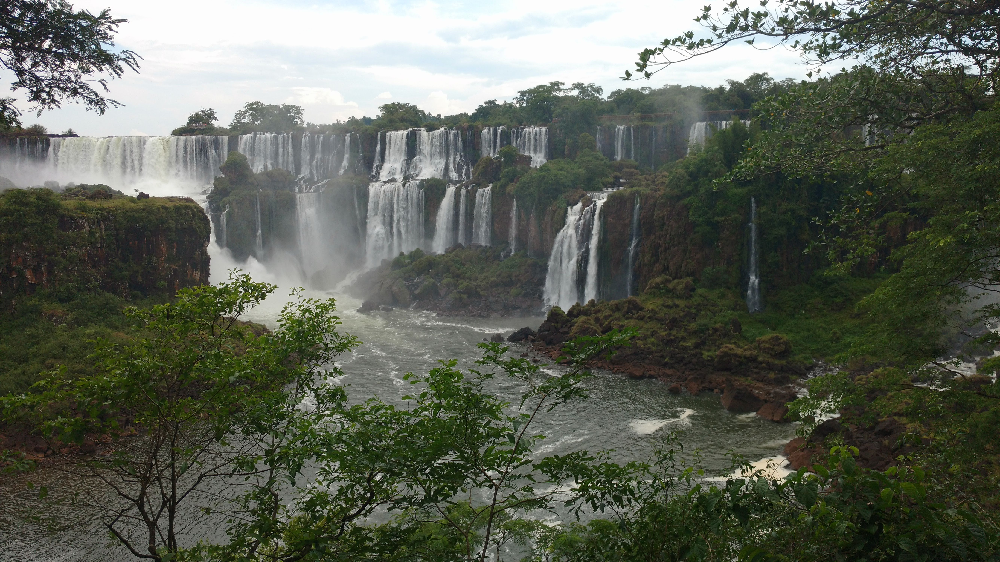

Iguazu Falls forms the largest system of waterfalls in the world, stretching along the border of Misiones province. Visitors can explore a series of elevated wooden walkways that bring them close to the roaring water. According to the official documentation provided by UNESCO on their World Heritage Centre profile, this protected subtropical rainforest shelters hundreds of rare and endangered species.
The Devil's Throat

Looking down into the chasm.
The best section of the national park is a narrow canyon known locally as Garganta del Diablo, or The Devil's Throat. More than half of the river's total water volume plunges violently into this specific chasm, creating a permanent cloud of heavy spray and mist. For travelers planning a visit, detailed safety guidelines and route information are maintained on the National Parks Administration webpage.
Experience the Falls

The view from a distance.
Experiencing this park is a must for travelers exploring South America. To understand the grand scale of this location, you can view this footage directly on the YouTube link.